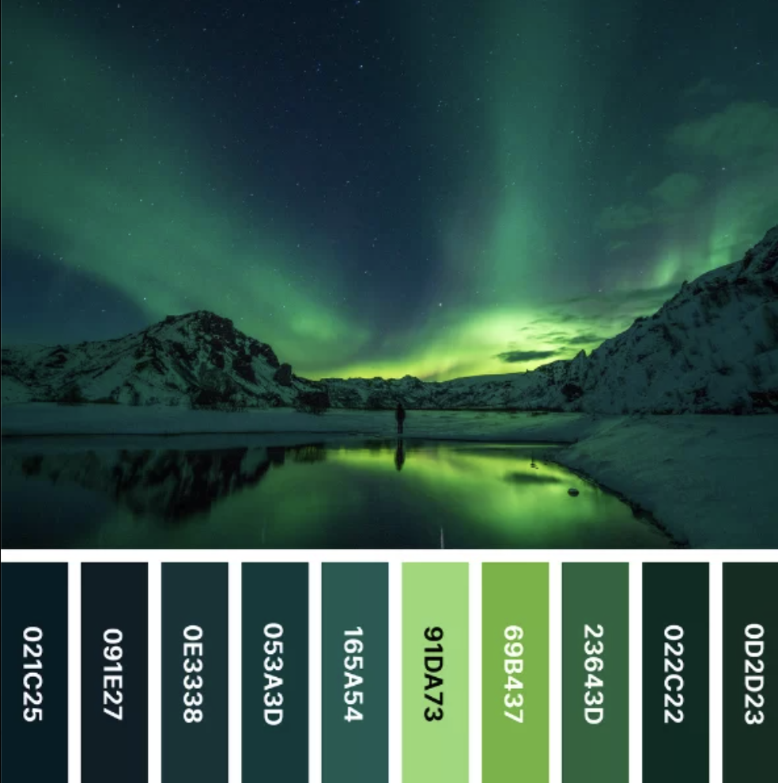
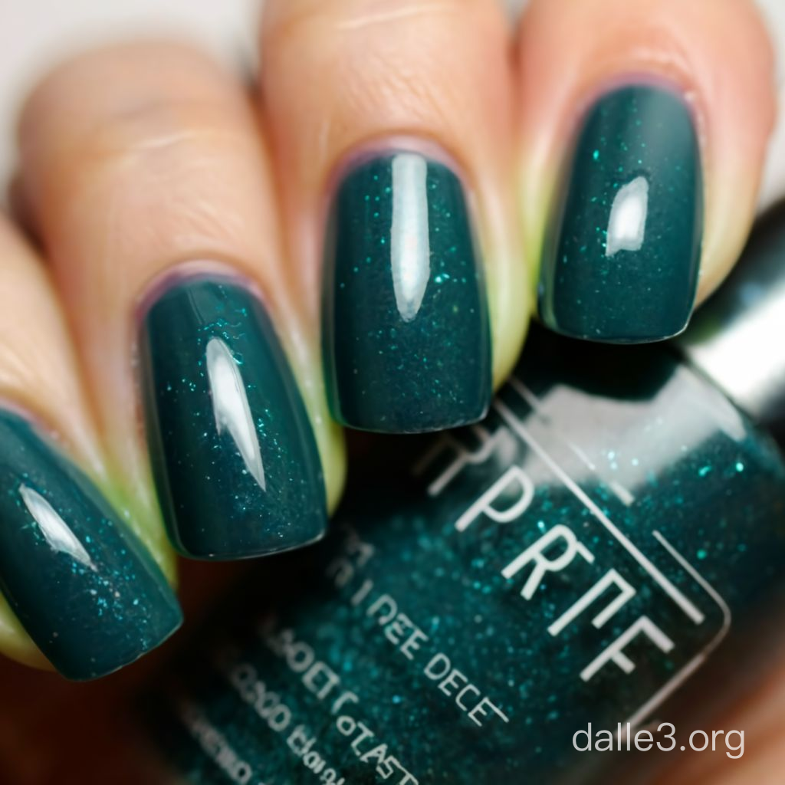
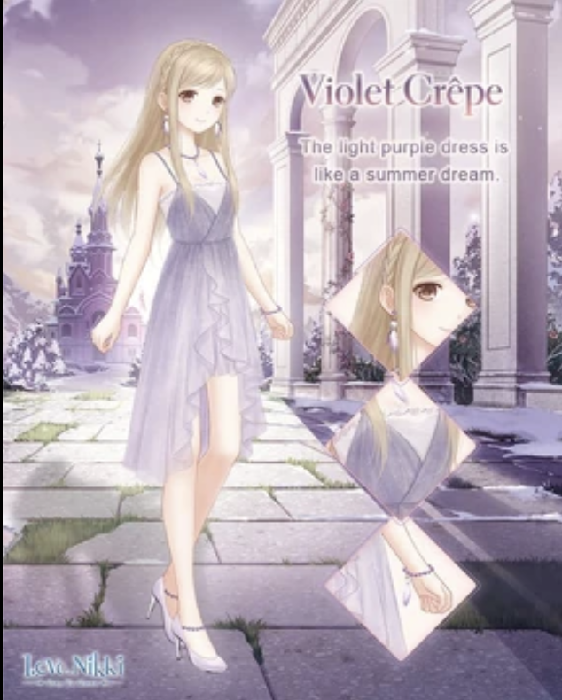
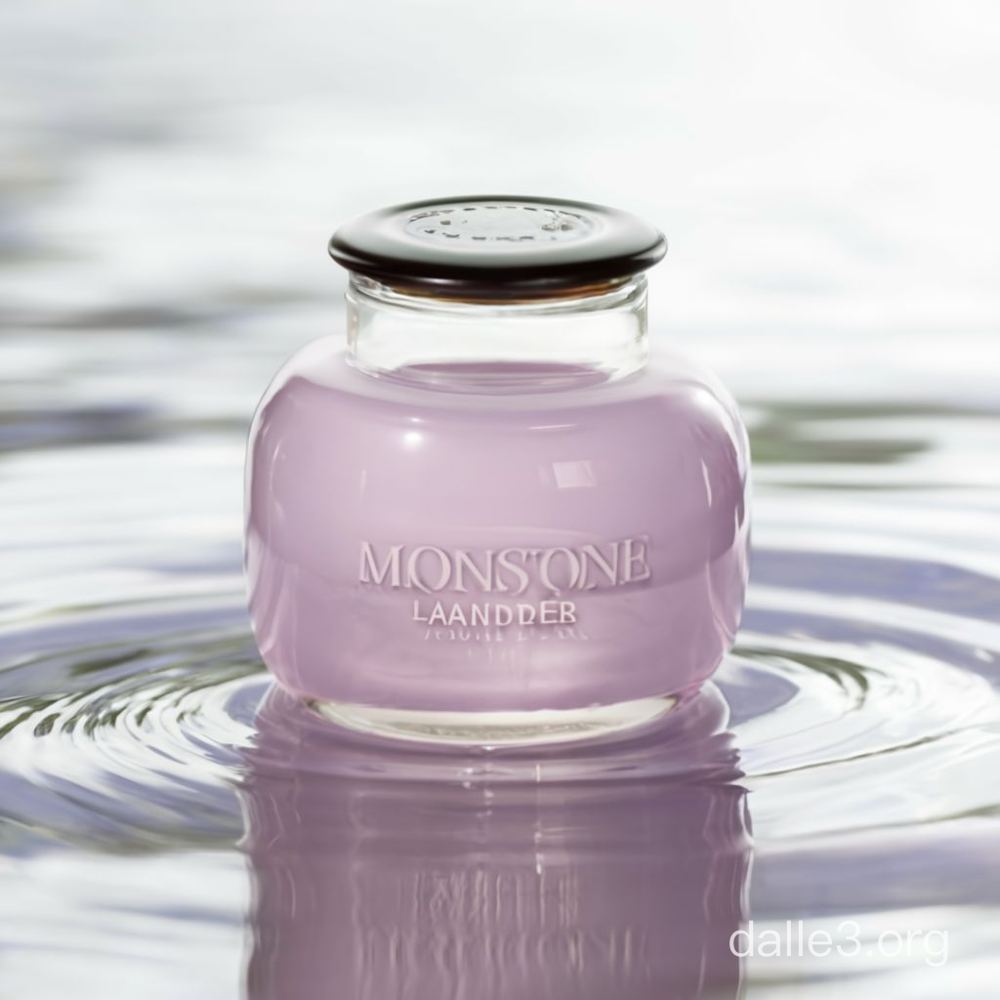
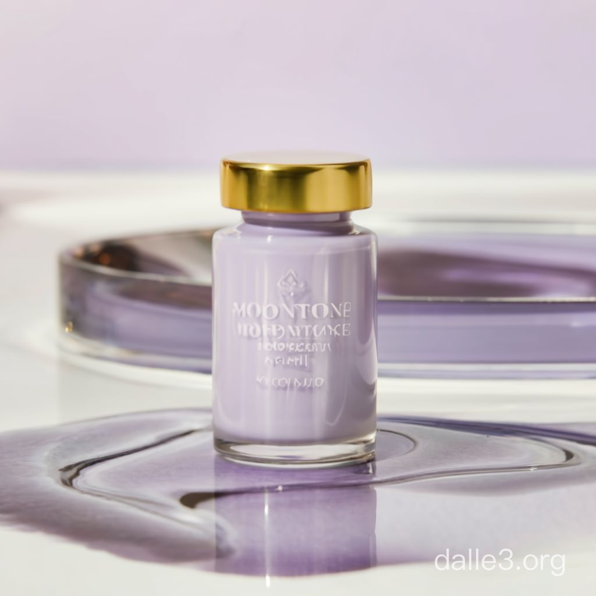

Can LLMs Create New Colors?
There has been a lot of online ruckus about how AI is stifling the creation of art and originality. However, I beg to differ. Don’t get me wrong, I don’t believe that AI should be used to write full movie scripts or to create paintings that belong in the Louvre, but as I thought about some of the possibilities we can do with LLMs, I was intrigued. So I decided to see just how much creative damage I could do– beginning with creating a new color.
I start with asking Bing’s Copilot:
create a new color
The LLM responds very kindly giving me lots of imaginative options to choose from:
Certainly! Creating a new color can be a delightful and imaginative process. While I can’t mix actual pigments, I can certainly help you conceptualize a unique color. Let’s embark on this colorful journey together!
- Sunset Coral: Imagine a warm blend of rosy pink and golden orange, reminiscent of a vibrant sunset over the ocean. This color exudes warmth, energy, and a touch of romance.
- Stardust Teal: Picture a deep, mystical shade that combines the richness of midnight blue with a hint of emerald green.
- Moonstone Lavender: Close your eyes and envision a soft, ethereal hue—pale lavender with a subtle shimmer, like moonlight dancing on water. It’s calming, dreamy, and perfect for serene spaces.
- Galactic Plum: Take the intensity of royal purple and infuse it with cosmic energy. This color feels otherworldly, like a distant galaxy swirling in shades of plum and indigo.
Remember, these colors exist only in our imagination, but you can play with them in your mind or even use them as inspiration for your next creative project! üåà‚ú®
I was the most curious about Stardust Teal and Moonstone Lavender, but I couldn’t help but think that I’ve seen very similar variations of these colors already… meaning it didn’t do it’s job in creating a new color. So I decided to find a color that I thought matched closest to the description and see how different it is the what Copilot created for me.
“My” Stardust teal
I imagine Stardust teal as a combination of all the colors in the sky of the northern lights. This is the inspo picture that I think of:

Dall-E 3’s Stardust Teal
** Unfortunately, Copilot (which has always been finicky on my computer) said that it would not create images on a work account i.e. my school email, and since I don’t have a different Microsoft account, I can no longer use Copilot for images. No worries though the technology that creates images in Copilot is called Dall-E 3 and I found that on a separate site! Carry on!

Very interestingly, the LLM did exactly what I would have done without me prompting it to. It went out of it’s way to not only give me it’s color, but also show me it’s inspiration for said color.
This got me excited to see if I could accurately guess the process for the next color.
“My” Moonstone Lavender

This may be an odd example to pull from, but the bottom of this dress reminds of of the description from Copilot. This time around I do not think Dall-E 3 will similarly pull from an anime app ad, but this is the color that I imagine Dall-E 3 will be similar to.
Dall-E 3’s Moonstone Lavender


Something interesting about Dall-E 3 is that it creates a product/reason for being along with the color. For Stardust Teal, it was nail polish, and for Moonstone Lavender, it’s some lotion. So no dress to match my prediction this time, but the color did turn out very similar.
Closing Remarks
It would be interesting to see how different Copilot is to Dall-E 3 in interpreting color descriptions, but if Dall-E 3 and I agree for 2/2, then I think Copilot must be pretty similar as well.
After all of this, I think it’s important to note that I was not blown away or shocked by either of these colors, and it’s because I have seen them before. This means that AI cannot create new colors… at least, not with the prompt that I supplied it with this time.
Thanks for tuning in!
Emmy